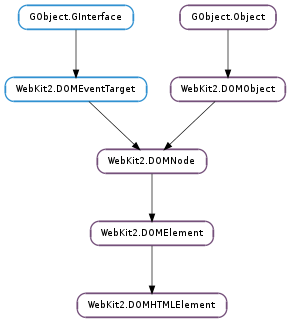

| click() | |
| get_access_key() | |
| get_children() | |
| get_class_list() | |
| get_class_name() | |
| get_content_editable() | |
| get_dir() | |
| get_draggable() | |
| get_hidden() | |
| get_id() | |
| get_inner_html() | |
| get_inner_text() | |
| get_is_content_editable() | |
| get_item_id() | |
| get_item_prop() | |
| get_item_ref() | |
| get_item_scope() | |
| get_item_type() | |
| get_lang() | |
| get_outer_html() | |
| get_outer_text() | |
| get_spellcheck() | |
| get_tab_index() | |
| get_title() | |
| get_translate() | |
| get_webkitdropzone() | |
| insert_adjacent_element(where, element) | |
| insert_adjacent_html(where, html) | |
| insert_adjacent_text(where, text) | |
| set_access_key(value) | |
| set_class_name(value) | |
| set_content_editable(value) | |
| set_dir(value) | |
| set_draggable(value) | |
| set_hidden(value) | |
| set_id(value) | |
| set_inner_html(value) | |
| set_inner_text(value) | |
| set_item_id(value) | |
| set_item_scope(value) | |
| set_lang(value) | |
| set_outer_html(value) | |
| set_outer_text(value) | |
| set_spellcheck(value) | |
| set_tab_index(value) | |
| set_title(value) | |
| set_translate(value) | |
| set_webkitdropzone(value) |
| Name | Type | Flags | Description |
|---|---|---|---|
| access-key | str | r/w | read-write str HTMLElement.access-key |
| children | WebKit2.DOMHTMLCollection | r | read-only WebKit2.DOMHTMLCollection HTMLElement.children |
| content-editable | str | r/w | read-write str HTMLElement.content-editable |
| dir | str | r/w | read-write str HTMLElement.dir |
| draggable | bool | r/w | read-write bool HTMLElement.draggable |
| bool | r/w | read-write bool HTMLElement.hidden | |
| inner-html | str | r/w | read-write str HTMLElement.inner-html |
| inner-text | str | r/w | read-write str HTMLElement.inner-text |
| is-content-editable | bool | r | read-only bool HTMLElement.is-content-editable |
| lang | str | r/w | read-write str HTMLElement.lang |
| outer-html | str | r/w | read-write str HTMLElement.outer-html |
| outer-text | str | r/w | read-write str HTMLElement.outer-text |
| spellcheck | bool | r/w | read-write bool HTMLElement.spellcheck |
| tab-index | r/w | read-write int HTMLElement.tab-index | |
| title | str | r/w | read-write str HTMLElement.title |
| translate | bool | r/w | read-write bool HTMLElement.translate |
| webkitdropzone | str | r/w | read-write str HTMLElement.webkitdropzone |
None
| Name | Type | Access |
|---|---|---|
| parent_instance | WebKit2.DOMElement | r |
Bases: WebKit2.DOMElement
| Return type: | WebKit2.DOMHTMLCollection |
|---|
| Return type: | WebKit2.DOMDOMTokenList |
|---|
| Return type: | bool |
|---|
| Return type: | str |
|---|
This method is deprecated. Use WebKit2.DOMElement.set_id () instead.
| Return type: | str |
|---|
This functionality has been removed from WebKit, this function does nothing.
| Return type: | WebKit2.DOMDOMSettableTokenList |
|---|
This functionality has been removed from WebKit, this function does nothing.
| Return type: | WebKit2.DOMDOMSettableTokenList |
|---|
This functionality has been removed from WebKit, this function does nothing.
| Return type: | bool |
|---|
This functionality has been removed from WebKit, this function does nothing.
| Return type: | int |
|---|
This functionality has been removed from WebKit, this function does nothing.
| Parameters: |
|
|---|---|
| Raises: | |
| Return type: |
| Parameters: | |
|---|---|
| Raises: |
| Parameters: | |
|---|---|
| Raises: |
| Parameters: | value (str) – A str |
|---|---|
| Raises: | GLib.GError |
| Parameters: | value (str) – A str |
|---|
This method is deprecated. Use WebKit2.DOMElement.set_id () instead.
| Parameters: | value (str) – A str |
|---|---|
| Raises: | GLib.GError |
| Parameters: | value (str) – A str |
|---|---|
| Raises: | GLib.GError |
| Parameters: | value (str) – A str |
|---|
This functionality has been removed from WebKit, this function does nothing.
| Parameters: | value (bool) – A bool |
|---|
This functionality has been removed from WebKit, this function does nothing.
| Parameters: | value (str) – A str |
|---|---|
| Raises: | GLib.GError |
| Parameters: | value (str) – A str |
|---|---|
| Raises: | GLib.GError |